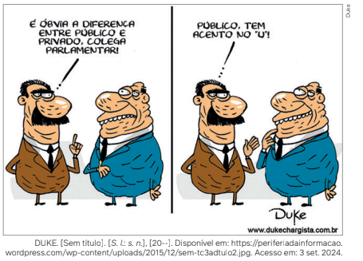

Juventudes e identidades
Acho que os jovens têm mais medo do futuro. Hoje é mais difícil ser jovem que antigamente.
COHN-BENDIT, D. Um legado de perguntas sem respostas. O Globo, Rio de Janeiro, LXXXIII, n. 27306, 11 maio 2008. Caderno Especial 1968, p. 2.
A afirmação acima, proferida por um dos principais líderes estudantis das manifestações
históricas que ocorreram na França, em 1968, revela uma avaliação sobre uma possível
diferença entre ser jovem nos dias de hoje, no século XXI, e ser jovem há mais de quarenta
anos. Segundo dados do Censo Demográfico do Instituto Brasileiro de Geografia e Estatística
(IBGE), em 2022 a população jovem compreendida entre 15 e 29 anos de idade no Brasil
era de 45 312 128 pessoas. Isso significa que a população jovem representava, no ano citado,
cerca de 22,31% da população brasileira.
A questão da juventude é um dos temas da Sociologia e diz respeito ao que chamamos de
identidade.
Identidade: o que é?
Quando falamos em identidade, é comum lembrarmos do Registro Geral (RG), um documento em que aparece a nossa fotografia, acompanhada do nome completo, da assinatura, do
nome dos nossos familiares, do estado em que nascemos, da data de nascimento, entre outras
informações. Quando registramos esses dados em um órgão do governo, recebemos a carteirinha com um número, fazendo com que estejamos devidamente identificados, representados
por um registro.
O que significa o documento de identidade? Em uma visão difundida pelo senso comum,
significa que, ao recebê-lo, seremos reconhecidos como membros da sociedade, como indivíduos
singulares (únicos), como sujeitos participantes da vida social, com características
específicas: nome, número, cor da pele (que aparece na fotografia), gênero, idade,
naturalidade.
Para a Sociologia, no entanto, falar em identidade é muito mais complexo do que podemos
imaginar.
Em primeiro lugar, os dados estampados no RG revelam diversos pertencimentos do indivíduo que somos: per-
tencemos a um país, a um estado, a uma família e a uma geração. Revelam também características físicas, como a
cor dos olhos e a cor da pele. Mas será que revelam tudo a nosso respeito?
A nossa identidade formal, anunciada pelos dados, é apenas um dos aspectos da nossa identidade. Ela não
expressa ideias, emoções, gostos, crenças, motivações e aspirações que temos. Todos esses e outros elementos
formam de fato a nossa identidade e nos transformam em sujeitos, pertencentes a determinada época e lugar,
inseridos em um tipo específico de sociedade, construída com base em uma história.
Se entendemos essa questão dessa forma, podemos dizer, portanto, que ser jovem hoje não é a mesma coisa que
era há mais de quarenta anos, aqui no Brasil ou na França, assim como, de forma mais ampla e diferenciada, entre as
sociedades ocidentais e uma sociedade em Bali (na Indonésia) ou em uma comunidade indígena do Xingu.
Para entender melhor o que estamos falando, vamos tomar como exemplo os acontecimentos que abalaram o
mundo em 1968, nos quais a juventude teve papel de liderança.
1968: os jovens comandam uma revolução política e social
Em 1968, jovens estudantes franceses tomaram as ruas de Paris com palavras de ordem e frases de impacto,
como:
“Sejam realistas: exijam o impossível!”
“É proibido proibir.”
“Abaixo a sociedade de consumo!”
“A economia está ferida.Pois que morra!”
“Parem o mundo que eu quero descer!”
“Antes de escrever, aprenda a pensar.”
“A barricada fecha a rua, mas abre o caminho.”
Aquele ano foi o momento culminante de uma série de mudanças que vinham ocorrendo nas sociedades
ocidentais desde o final da década de 1950. Essas mudanças, de caráter social, político e cultural, foram comandadas
por jovens: eles eram os principais líderes da Revolução Cubana – Fidel Castro, Ernesto Che Guevara e Camilo
Cienfuegos –; os atores que representavam personagens desafiadores e rebeldes, que pilotavam suas motos e carros
em alta velocidade, como Marlon Brando e James Dean; os músicos que transformaram o rock em um fenômeno
mundial, como Elvis Presley, Chuck Berry e Bill Halley and His Comets.
Influenciada por esses acontecimentos, a década de 1960 assistiu ao surgimento e ao sucesso dos Beatles e
seus cabelos compridos; à permanente rebeldia dos Rolling Stones; à invenção da minissaia; ao uso das drogas
como forma de expandir o pensamento, a imaginação e a criatividade; e à disseminação do sexo livre, com o
lançamento da pílula anticoncepcional.
Ser jovem passou a significar, nesse contexto, a afirmação da luta por uma liberdade plena, contra o
conservadorismo das gerações anteriores e todas as formas de opressão política, desde a sociedade de consumo ocidental,
representada pelos Estados Unidos, até as ditaduras socialistas, representadas pela União Soviética. Assim, a luta
pelo “amor livre” associava-se às manifestações contra a Guerra do Vietnã e o alistamento militar; e a luta pela revolução socialista era combinada com a resistência à invasão soviética da Tchecoslováquia, que pôs fim às reformas
políticas conhecidas como a Primavera de Praga.
As manifestações estudantis que ocorreram em Paris se espalharam pelo mundo, atingindo cerca de cinquenta
países, entre os quais Itália, Polônia e Iugoslávia. Cidades como Madri, Valência, Nova York, Santiago, São Paulo,
Belo Horizonte e Rio de Janeiro tiveram as ruas tomadas.
As bandeiras de luta eram semelhantes, mas com enfoques distintos, assim como a intensidade com a qual
foram defendidas. Enquanto em Nova York a luta pela liberdade não poderia ser dissociada da luta contra a Guerra
do Vietnã, no Brasil a luta pela liberdade significava posicionar-se contra a Ditadura Civil-Militar, que se instaurara
no país em 1964.
Independentemente do resultado concreto dessas manifestações – no Brasil, por exemplo,
a ditadura não foi derrubada; ao contrário, tornou-se ainda mais violenta nos anos seguintes,
promovendo perseguições, exílio, torturas e assassinatos de seus opositores –, o mundo, em
permanente ebulição e sempre sob o comando da juventude, nunca mais seria o mesmo.
A crítica à sociedade de consumo teve como uma de suas consequências o surgimento do
movimento ecológico e a denúncia da destruição do meio ambiente como contrapartida do
“progresso”, do desenvolvimento econômico e da busca do lucro a qualquer custo. O
enfrentamento das diversas formas de opressão permitiu a denúncia do machismo e dos falsos moralismos,
até então vigentes, levando à redefinição do papel da mulher na sociedade, que passou a ter
uma presença cada vez mais fortalecida no mercado de trabalho, e à luta pela superação de
todas as formas de discriminação sexual. Essas lutas, que prosseguem até os dias atuais, se
intensificaram no período. Elas significaram, também, uma mudança nas concepções sobre a
identidade das pessoas – não só dos jovens, mas dos membros da sociedade em geral.
Identidade no debate da Sociologia
O debate sociológico sobre o tema da identidade não é novo. Há muito tempo, sociólogos já discutiam os
significados do termo identidade. Dois pensadores que se dedicaram a esse tema foram George Herbert Mead (1863-1931) e Erving Goffman (1922-1982).
O sociólogo estadunidense George Herbert Mead afirmava que somos o que somos porque adquirimos ao
longo da vida traços característicos de nosso self por meio das interações sociais que estabelecemos com outros
indivíduos. Em uma tradução mais difundida, o termo em inglês poderia ser entendido como “si mesmo”. Para Mead,
entretanto, a ideia era uma referência à existência de um self social, ou seja, significava que o indivíduo organiza
uma série de atitudes sobre o meio social em que vive e as quais tem condições de adotar; é a consciência que um
sujeito tem de si mesmo.
Mead afirmava também que essa consciência só é possível se o indivíduo estabelecer contatos sociais; não é
algo que nasce com ele. O filme O enigma de Kaspar Hauser (1974), por exemplo, relata o caso real, ocorrido em
1820, de um menino alemão que teve seu primeiro contato com seres humanos na adolescência e que só aprendeu
a falar após esse contato com outras pessoas. George Mead consideraria que esse caso ilustra como o self é
impossível de ser concebido fora de um intercâmbio simbólico com outras pessoas.
O self, para George Mead, tem duas características: o “eu” e o “mim”. O eu refere-se ao sujeito que age, e o mim
refere-se a como nos vemos pelos olhos de outras pessoas. Segundo o autor, o “eu” constitui uma reação do nosso corpo às
atitudes dos outros, enquanto o “mim” é um conjunto organizado de atitudes dos outros que um indivíduo adota.

Outro sociólogo importante que se debruçou sobre o tema da identidade foi o canadense Erving Goffman.
No livro A representação do eu na vida cotidiana, publicado em 1956, Goffman sustenta a ideia de que a vida social
do indivíduo e, por consequência, sua identidade podem ser entendidas como representação teatral.
A ação de um indivíduo em relação a outros não tem apenas uma finalidade instrumental, ou seja, o objetivo
de fazer algo, mas é também condicionada pelo modo como o sujeito quer aparecer diante dos outros. Goffman
afirma que, quando um indivíduo está diante de outro, ele tem muitas razões para tentar controlar as impressões
que as pessoas têm dele e da situação específica dessa relação. Para Goffman, portanto, o indivíduo e sua
identidade são produtos de uma cena representada durante determinada situação. Leia a seguir uma citação do autor
a esse respeito.
Quando um indivíduo chega à presença de outros, estes, geralmente, procuram obter informação a seu
respeito ou trazem à baila a que já possuem. [...] A informação a respeito do indivíduo serve para definir a
situação, tornando os outros capazes de conhecer antecipadamente o que ele esperará deles e o que dele podem
esperar. Assim informados, saberão qual a melhor maneira de agir para dele obter uma resposta desejada.
GOFFMAN, E. A representação do eu na vida cotidiana. Tradução de Maria Célia Santos Raposo. Petrópolis: Vozes, 1985. p. 11.
Como podemos observar, a ideia de identidade de Goffman é muito parecida com a de George Mead. Em
ambas, os indivíduos assumem diversas identidades, dependendo da situação social na qual estão inseridos.
Identidades sociais ontem e hoje
Como vimos, na Sociologia há diversos autores que discutem e refletem sobre o conceito de identidade. Agora,
vamos destacar outro autor que escreveu um pequeno livro sobre o assunto: o teórico jamaicano, mas radicado no
Reino Unido, chamado Stuart Hall.
Quando falamos em identidade, estamos falando de papéis distintos
assumidos pelo indivíduo como sujeito histórico, pertencente a determinada sociedade. Hall
destaca um indivíduo genérico, membro da sociedade ocidental,
ou seja, das sociedades europeias e das colonizadas pelos europeus nas Américas. O sociólogo apresenta três
ideias muito diferentes sobre as identidades que se constituíram historicamente no Ocidente.
Uma primeira identidade do sujeito, segundo Hall, teve origem no Iluminismo, com base em uma concepção de
pessoa humana como um indivíduo totalmente centrado, unificado, dotado de capacidades de razão, consciência e ação.
Essa ideia estava associada à afirmação da centralidade do ser humano (antropocentrismo) em oposição às
concepções que vinham da Idade Média, que afirmavam a total centralidade de Deus e o poder inquestionável
da Igreja. Um primeiro momento do nascimento desse “novo indivíduo” foi o Renascimento, no século XVI, com o
Humanismo, que se consolidou no século XVIII com o Iluminismo. A razão humana, finalmente, se sobrepunha de
modo definitivo à fé cega, que impedia o desenvolvimento da ciência e do capitalismo.
A segunda identidade que surgiu historicamente, de acordo com Hall, foi baseada na noção de um sujeito
sociológico, que coincidiu com a ascensão da sociedade moderna, associada ao capitalismo, no século XIX.
Devemos entender esse sujeito sociológico não como um indivíduo que tinha a autonomia e a autossuficiência do sujeito
iluminista, mas como um sujeito que se relacionava integralmente com a sociedade em que vivia, interagindo de
forma permanente com ela.
No século XIX, com a consolidação do capitalismo na Inglaterra e suas consequências para o restante da
humanidade, o “sujeito sociológico” que assume o poder apresenta, então, a sua “carteira de identidade”: ele era branco,
europeu, anglo-saxão, do gênero masculino, cristão. Todas as outras identidades, dentro da mesma sociedade, e
principalmente em outras partes do mundo, deveriam necessariamente estar subordinadas a ele.
Por fim, segundo Hall, essa identidade, que teve origem na Era Moderna, começou a ser “desmontada” no
século XX, principalmente com base nas mudanças que ocorreram na década de 1960. Trata-se, agora, de um sujeito
pós-moderno, no qual coexistem diversas identidades simultâneas e até contraditórias, todas de caráter cultural.
Deve-se observar que esse “novo sujeito” é também produto das mudanças constantes que caracterizaram a
Era Moderna desde o século XIX.
O que pode ser apresentado como “novidade” – como defende Stuart Hall – é o ritmo e a profundidade dessas
mudanças, aceleradas desde os anos 1970, em comparação com as sociedades modernas que foram se
consolidando no mundo ocidental a partir do século XIX, após a Revolução Francesa.
O sujeito pós-moderno, segundo essa concepção, não teria um “centro”, ou melhor, esse centro estaria
“deslocado”, desarticulado, tendo perdido a estabilidade. O sujeito moderno ou sociológico do século XIX é um indivíduo
com uma identidade única, centrada na sua nacionalidade (o país onde nasceu) e nas suas características físicas
(cor da pele, por exemplo). É com base nessas definições que esse sujeito se situa e se relaciona com a sociedade.
Já o sujeito pós-moderno apresentaria múltiplas identidades, sem que uma se impusesse às demais.
Um exemplo dessa “multiplicação de identidades” apresentado por Stuart Hall foi o episódio da indicação de um
novo juiz para a Suprema Corte estadunidense, pelo então presidente George Bush (pai de George W. Bush, que
também foi presidente do país), em 1991. Como presidente eleito pelo Partido Republicano, Bush desejava indicar
um juiz conservador, que defendesse determinados interesses. Então, segundo Hall, ele promoveu um “jogo das
identidades”: indicou para o cargo Clarence Thomas, um juiz negro de posições conservadoras. Assim, ele teria o
apoio de seus eleitores brancos, que, apesar da possibilidade de terem preconceitos contra um juiz negro, veriam
Thomas com outros olhos, em razão das suas ideias conservadoras, e dos seus eleitores negros, que aplaudiriam a
indicação de Thomas.
Durante o processo de escolha do juiz, no entanto, Clarence Thomas foi acusado
de assédio sexual por uma ex-colega, Anita Hill, que era negra. O tal “jogo de identida-
des” ocorreu novamente em torno do escândalo provocado pelo caso: alguns homens
negros apoiaram Thomas, com base na cor da sua pele; outros se opuseram a ele, por
causa do assédio sexual. As mulheres negras se dividiram: algumas apoiaram Thomas,
e outras, a mulher que o acusou. Os homens e as mulheres brancas conservadoras,
antifeministas, apoiaram Thomas; os mais liberais, que condenavam o sexismo, não.
Voltando aos jovens: quais são as suas identidades?
Começamos este capítulo refletindo sobre a juventude que viveu nos anos 1960. E os jovens de hoje no Brasil?
Podemos dizer que eles têm uma identidade? Ou será que têm várias identidades?
Tanto no Brasil como na escala mundial, o debate sobre juventudes é relevante para a Sociologia.
O sociólogo estadunidense Talcott Parsons (1902-1979), ao abordar o tema da juventude, delimita-o na etapa da
socialização secundária: a juventude, na estrutura funcional da sociedade, seria a etapa de transição à vida adulta,
em que os indivíduos são conduzidos a rotinas e normas que ultrapassam a vida familiar e privada. Qualquer
resistência a essas normas é caracterizada como desvio ou anomia.
Outro sociólogo interessado na reflexão sobre a juventude é o húngaro Karl Mannheim (1893-1947). Mannheim
pensa a juventude como potência, ainda não dominada pela ordem social dominante. A juventude, segundo o autor,
tem um potencial de transformação, que pode ou não ser mobilizado pela sociedade. Assim, jovens experimentam
a realidade como um livro aberto, seja ele conservador, seja ele contraditório ou contestável.
O sociólogo francês Pierre Bourdieu (1930-2002) vai na contramão dos estudos tradicionais sobre juventude na
Sociologia, pois afirma que a juventude é “apenas uma palavra”. Em uma entrevista concedida em 1978, Bourdieu
afirma que as divisões entre as idades são arbitrárias, pois cada sociedade, em tempos e contextos diferentes,
atribui divisões entre jovens e velhos por questões de repartição de poder, o que acaba impondo limites a essas
categorias.
No contexto dos debates no Brasil, um especialista no tema da juventude é o sociólogo
Juarez Dayrell, professor da Universidade Federal de Minas Gerais (UFMG).
Dayrell parte da ideia de uma “condição juvenil” atual, abordando tudo o que pode ser
entendido como culturas, demandas e necessidades da juventude. Segundo o pesquisador,
precisamos entender as manifestações cotidianas e seus símbolos como amostras de uma
maneira de ser jovem. O sociólogo destaca que uma parcela da juventude no Brasil é pobre,
vive nas periferias das grandes cidades e frequenta majoritariamente as escolas públicas.
Para Dayrell e a também socióloga Juliana Reis, especialista na temática, a juventude é uma
definição socialmente construída, marcada por variadas condições sociais, culturais, de
gênero e geográficas: há jovens de diversas classes, etnias, religiões, com determinados valores,
entre outros aspectos. Além de serem marcadas pela diversidade, as identidades da juventude
são dinâmicas, ou seja, transformam-se de acordo com o tempo.
A categoria de “condição juvenil”, segundo Dayrell e Reis, diz respeito a como uma
sociedade atribui sentido a esse período da vida, em situações vividas com base em
recortes referidos às diferenças de classe, etnia, gênero, entre outros, além de contextos
geracionais específicos.
Assim, a condição juvenil, no Brasil, manifesta-se em variadas dimensões. A primeira delas é a
dimensão do trabalho. Esse é um desafio cotidiano para muitos jovens e, para vários deles, é
a garantia da própria sobrevivência. No trabalho, os jovens buscam uma gratificação imediata
e um possível projeto de futuro, ou mesmo garantir um mínimo de recursos financeiros para se
divertir, namorar ou consumir.
A segunda dimensão é a cultural. Os jovens lidam com seus sentimentos e desejos conforme
as experiências que têm no cotidiano, geralmente com a intenção de melhorar sua condição
concreta. Na vida deles, aquilo que chamamos de simbólico em nossas relações sociais tem
sido cada vez mais utilizado por milhões de jovens brasileiros como maneira de se comunicar
e de se posicionar diante da sociedade e até de si mesmos, especialmente nas redes sociais.
A terceira é uma dimensão que
pode ser chamada de sociabilidade. De
acordo com diversos estudos sociológicos brasileiros, essa dimensão é muito
importante quando pensamos sobre as
identidades dos jovens, pois, entre seus
pares, amigos e colegas, no lazer, na diversão, nas escolas ou no trabalho, suas
referências são dadas principalmente
pelos amigos. É com eles que os jovens
constroem suas trajetórias de enfrentamento e afirmação diante dos adultos,
distinguindo-se e afirmando-se perante
esse outro mundo.
Apresentação de rap e batalha de poesia. São Paulo (SP), 2021./Cesar Diniz/Pulsar Imagens
A convivência com expressões artísticas como o rap, entre outras, tem papel importante na formação dos jovens.
Diferentes estudos abordam também outras dimensões não menos importantes,
como os espaços que são construídos como lugares “só de jovens” e a dimensão da
“transição para a vida adulta”. Essa transição significa que a vida vai se constituindo
como um trânsito constante entre obrigações institucionais, ritos, símbolos próprios
e prazer.
Em síntese, pode-se dizer que a vida dos jovens representa um momento de transição
e se apresenta como um constante “vai e vem” entre os prazeres da juventude e a
rigidez das obrigações adultas.
Existe uma identidade nacional brasileira?
Vamos refletir agora sobre a ideia de identidade no Brasil. Diante do que estudamos,
poderíamos falar na existência, de alguma forma, de uma identidade nacional brasileira?
Poderíamos dizer que sim, até determinado ponto, se considerarmos uma série de
características culturais presentes nas manifestações da maioria da população, como
suas tradições religiosas ou preferências esportivas (por exemplo, o futebol). No entanto, assim como em outros países, essas tradições são construídas ou inventadas em
determinado momento da nossa história.
Se fizermos uma pesquisa sobre a história do futebol no Brasil, por exemplo,
descobriremos que ele foi trazido por ingleses, entre o final do século XIX e o início do século
XX. Naquela época, tomando como exemplo a então capital do país, o município do Rio de
Janeiro, o esporte mais popular eram as regatas – as corridas de embarcações (canoas)
pilotadas por remadores, na Lagoa Rodrigo de Freitas. Somente décadas depois o
futebol virou o esporte mais popular do Rio de Janeiro e no resto do Brasil. Em outros
países, como os Estados Unidos, o futebol (chamado de soccer), apesar da origem inglesa
(football), até hoje não é o esporte mais popular.
Em razão do passado colonial do Brasil estar vinculado a Portugal e da herança
escravocrata, somente após a oficialização da Independência, durante o Império, a
construção de uma identidade nacional passou a preocupar as elites políticas e econômicas.
A elite urbana e agrária brasileira, sob influência do racismo científico e de ideias
eugenistas que estavam em voga no século XIX (conversaremos melhor sobre o tema
do racismo em outro capítulo), ficou preocupada com o futuro de um país que fosse
politicamente soberano, mas composto majoritariamente de descendentes de escravizados. Para termos uma dimensão desse contexto, estatísticas divulgadas no Brasil
em 1872 apontavam que 58% da população brasileira era negra, sendo 42% livre e 16%
escravizada.
Torcedores brasileiros em jogo da Copa do Mundo de Futebol. Doha, Catar, 2022.
A população negra era julgada por essa elite racista como “naturalmente incapaz” de ser
inserida em um projeto de desenvolvimento de uma nação minimamente autônoma. Essa elite
agrária dirigente, com o apoio expresso da família real, investiu em políticas de Estado voltadas
de forma deliberada para o gradual “branqueamento” da população, com o incentivo à vinda
de imigrantes europeus.
Esse processo já havia sido iniciado ainda antes da Independência, por meio de projetos
de colonização com recursos públicos e privados. O entendimento da elite agrária era de que
os “princípios da livre iniciativa” e a implantação de uma economia liberal não poderiam ser
efetivados tendo como base uma população majoritariamente de origem africana.
Com Dom Pedro II, os projetos de colonização foram aprofundados, inclusive sob a influência
direta do embaixador francês no Brasil, conde de Gobineau, amigo pessoal do imperador
e que o considerava uma exceção em uma terra “desprezível”, com uma cultura “estagnada”,
ameaçada por “terríveis doenças tropicais” e composta de uma população “assustadoramente
feia”, como descreve o historiador estadunidense Thomas Skidmore (1932-2016). Gobineau
é apenas um exemplo conhecido entre diversos europeus que apresentaram teses racistas
naquele momento histórico.
Diversos intelectuais brasileiros reforçaram as teses de cunho racista, mas havia exceções,
como Alberto Torres (1865-1917) e Manuel Bomfim (1868-1932). Tanto Torres como Bomfim,
influenciados pelos estudos antropológicos de Franz Boas (1858-1942), rejeitaram a ideia de
inferioridade étnica no Brasil, pois entendiam o problema do país como responsabilidade do atraso
das elites e da exploração estrangeira – no caso de Alberto Torres – ou como responsabilidade
da colonização extremamente predatória realizada pelos portugueses – no caso de Bomfim.
Essa leitura negativa sobre uma identidade nacional, que estaria “previamente condenada”
em razão da presença da população negra, segundo essas teses racistas, somente começou a
ser abandonada na década de 1930, com a publicação, em 1933, da obra Casa-grande &
senzala, do sociólogo pernambucano Gilberto Freyre (1900-1987).
Nessa obra, que ganhou notoriedade internacional, Freyre defendeu a tese de que a
sociedade brasileira, em comparação com o restante dos países do continente, foi o lugar em que
a relação entre diferentes raças se constituiu de forma mais harmoniosa, resultando em um
ambiente de “quase reciprocidade cultural”, no qual os valores e as experiências
dos povos que aqui viviam foram
aproveitados por todos. Assim, seguindo a tese de Freyre, as diversidades culturais existentes entre as três
principais “raças” presentes na formação do Brasil se complementariam em
uma relação harmoniosa.
Cronistas e pintores viajantes
estrangeiros, como o alemão Johann
Moritz Rugendas (1802-1858), deixaram
registros que nos permitem conhecer
um pouco mais as relações sociais
no Brasil no século XIX. Nessa obra,
que retrata uma fazenda de café em
Minas Gerais na década de 1820, há
a representação de uma convivência
supostamente "harmoniosa" entre as
três raças que comporiam a sociedade
brasileira.
É por meio dessas ideias, fundamentadas na miscigenação ou mestiçagem étnica
e cultural do país, que se constrói uma concepção de identidade brasileira baseada no
conceito de democracia racial. O país seria um grande exemplo mundial nesse sentido,
representando uma experiência positiva e bem-sucedida, sem os conflitos raciais existentes
em outras partes do planeta, como o apartheid implantado na África do Sul, a segregação
racial da população negra nos Estados Unidos – que perdurou entre 1877 e 1964 – ou a
perseguição e o massacre do povo judeu promovidos pelo regime nazista na Alemanha.
Seria o Brasil uma democracia racial?
A tese relativa à democracia racial brasileira como parte de nossa identidade nacional tem
grande força até hoje, apesar de ter começado a ser desconstruída na década de 1950. Nessa
época, pesquisas realizadas por sociólogos em várias partes do território brasileiro,
patrocinados pela Organização das Nações Unidas para a Educação, a Ciência e
a Cultura (Unesco), demonstraram que esse entendimento “harmonioso” presente na análise de Gilberto Freyre era,
na verdade, um “mito”. Entre os sociólogos que demonstraram o mito da democracia racial,
com base nos resultados de pesquisas de campo, podemos destacar os brasileiros Florestan
Fernandes (1920-1995), Octavio Ianni (1926-2004), Oracy Nogueira (1917-1996) e Fernando
Henrique Cardoso (1931-), assim como o sociólogo francês Roger Bastide (1898-1974). A obra
e as reflexões do intelectual, político, ativista e artista Abdias Nascimento (1914-2011) também
foram importantes no confronto a essa ideia de democracia racial e na denúncia do processo
de embranquecimento da cultura e da população brasileira.
Décadas mais tarde, o antropólogo congolês, radicado no Brasil, Kabengele Munanga
(1940-) demonstrou o quanto o mito da democracia racial brasileira penetrou profundamente
na sociedade, encobrindo as desigualdades sociais e a alienação da
população não branca a respeito do racismo
que sofre e da própria condição de
exploração, fazendo com que a mestiçagem se configurasse como forma de
apagamento de uma identidade negra
própria, de origem africana.
Para intelectuais como Kabengele Munanga e Abdias Nascimento, o mito da democracia racial serve para mascarar o passado escravocrata e o presente racista da sociedade brasileira.
Seríamos cordiais?
Voltando à década de 1930, surge nesse contexto de construção de uma identidade
nacional uma segunda característica com a qual o povo brasileiro passa a ser rotulado: a ideia
de cordialidade. A concepção do brasileiro como um homem cordial está presente em outra
obra sociológica que alcançou grande repercussão na época, Raízes do Brasil, escrita pelo
historiador e sociólogo Sérgio Buarque de Holanda (1902-1982) e publicada em 1936. Sua teoria
muitas vezes foi interpretada de forma equivocada, mas buscaremos explicá-la a seguir.
Diferentemente da tese da “harmonia entre as três raças” de Gilberto Freyre, a obra de
Sérgio Buarque de Holanda tem como objetivo o debate sobre a superação da herança colonial
brasileira, baseada em uma economia frágil, uma população vivendo em condições precárias e
a constituição de uma elite e de uma sociedade agrárias extremamente autoritárias. Quanto à
população brasileira, de 40 milhões de habitantes na década de 1930, 70% viviam no campo, e
o índice de analfabetismo geral era de 60% dos habitantes, com percentuais ainda mais altos
na Região Nordeste. Nesse contexto, como fazer para que o Brasil se tornasse uma nação
moderna? Qual identidade poderíamos almejar?
Buarque de Holanda discorda das teses racistas apresentadas anteriormente. Inspirado
pelas teorias e metodologias de Max Weber, ele critica o formato da colonização portuguesa e
a sociedade autoritária gerada por ela, na qual os grandes senhores de terras exerciam o poder
de forma ilimitada e absoluta.
Nessa relação com o poder surge o conceito de “homem cordial”: não se trata de
afirmar, segundo o autor, que os brasileiros sejam “inocentes” ou “generosos”, mas, sim, de
tratar todos os tipos de relação de poder do ponto de vista das interações pessoais.
No Brasil, os indivíduos não teriam acesso a direitos universais; pelo contrário, de forma
generalizada, somente teria algum tipo de “direito” o indivíduo mais “próximo” de quem detém
o poder. O indivíduo beneficiado seria aquele que é amigo ou parente, aquele mais “íntimo”,
que é tratado de forma mais pessoal, mais “próximo do sangue e do coração” – daí o termo
“cordial”: a palavra deriva do latim cordialis, relativo a coração.
Essas pessoas mais próximas são as que receberiam os favores do Estado, por exemplo.
Assim, a relação pessoal e particular sempre determinaria todas as demais relações de poder,
abarcando as instituições em geral.

Esse tipo de relação cordial, de
acordo com Sérgio Buarque de Holanda, teria diversas consequências:
além de se constituir como forma de
mascarar os conflitos, transforma o
Estado em uma instituição aparelhada por interesses particulares,
na qual alguns são beneficiados
e outros, não. No entanto, se esse
tipo de relação particularizada
sofre alguma ameaça, qualquer que
seja, abre-se a possibilidade para a
ocorrência de diversas formas de
violência.
A charge nos remete à ideia de
cordialidade, em que as esferas pública e
privada se misturam nas relações.
Enfim, podemos observar que as reflexões sobre identidade brasileira e identidade juvenil são bem amplas. Como observamos em diversos autores, não podemos falar em identidade (no singular), mas em identidades (no plural). Assim como vimos no capítulo anterior, ao abordarmos a diversidade cultural, quando refletimos sobre identidades, percebemos também uma diversidade de manifestações identitárias em nosso país e no mundo.